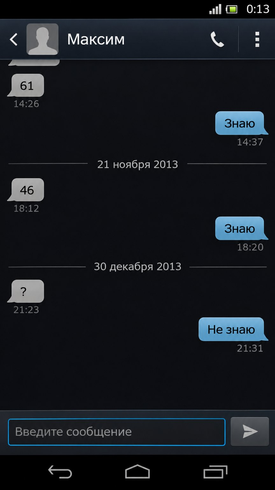

Андрей. Москва — Харьков, ноябрь 2013 — январь 2014

Зимы в ноябре так и не случилось. По радио на студийной кухне каждое утро говорили «аномально тепло» и называли цифры, плюс три, плюс пять, рекорд такого-то года, и Олег, наливая себе кофе, отвечал радио, что у него на даче сирень опять собралась цвести, дура. За окном у второго пульта всё было сухое и серое. Башни за рекой, которые Андрей девять лет видел в кранах и зелёной сетке, почти все теперь стояли в стекле до самого верха, и только на одной ещё торчал жёлтый кран, неподвижный, с опущенным крюком.
Двадцать первого, в четверг, он с утра выравнивал девочку из Эдиковых, восемнадцатилетнюю, с короткой чёлкой, которая во вторник ночью спела у них три песни и на каждой третьей строчке уходила вниз на четверть тона, а на четвёртой возвращалась сама. Андрей поднимал её по одной ноте. Он делал это теперь быстро, почти не слушая, рука сама находила, где девочка просела, и он думал, что через год сможет делать это с закрытыми глазами, а через два, может быть, и не включая звука.
В обед на кухне по радио дали Киев. Диктор сказал, что правительство Украины приостановило подготовку к подписанию соглашения об ассоциации с Евросоюзом, за неделю до саммита в Вильнюсе, и что в Брюсселе об этом сожалеют, а в Москве, напротив, решение приветствуют. Андрей стоял у плиты с пустой кружкой и слушал не новость, а голос. На «Брюсселе» голос шёл ровно. На «Киеве» он опустился. Это было немного, полтона, но Андрей слышал полтона так же ясно, как слышат, что в соседней комнате выключили холодильник, и он знал это опускание с четвёртого года, когда московские дикторы так же говорили про майдан. Три года назад, на поминках деда, два диктора, киевский и московский, говорили в одной тональности. Теперь опять было полтона.
— Ну, — сказал Олег, садясь к столу с бутербродом. — Ваши в Европу передумали.
Андрей открыл рот, чтобы сказать, и не сказал. Он хотел сказать «наши». Пять лет назад, в августе, он сказал «наш» про украинского президента, который летал в Тбилиси, сразу, не думая, и три года назад сказал Олегу «наш» про Януковича, когда мама позвонила с крыльца, и слово тогда встало на место легко, как палец на лад. Теперь он поставил его в уме перед «передумали», и оно не вставало. Он попробовал «они», и «они» не вставало тоже.
— Передумали, — сказал он.
— И нашим про вас тоже вот, — сказал Олег. — Вчера слышал? Из миграционной службы главный. Коридор, говорит. Девяносто дней за полгода, а потом гуляй. Как в Шенгене.
— Это предложили.
— У нас предложили, значит, будет, — сказал Олег и откусил бутерброд. — У нас просто так не предлагают.
Андрей налил себе чаю и вернулся за второй пульт. Девочка с чёлкой лежала на экране зелёными полосами, и одна строчка у неё была выделена синим, там, где он остановился. Он поднял её на четверть тона, включил, и девочка спела ровно, правильнее, чем пела.
Под вечер пришла эсэмэска.
«46».
Андрей посчитал сам, хотя знал, что Максим посчитал правильно. В Белгороде в октябре ему выдали карту девятого, девяносто дней кончались шестого января. От сегодняшнего дня сорок шесть. Максим снова слал ему цифры с весны, после того как год молчал, и Андрей не спрашивал, почему перестал и почему начал снова.
«Знаю».
⁂
В субботу он поехал на рынок у «Преображенской площади». Он ездил туда редко, раз в месяц, а то и реже, за творогом, и каждый раз шёл сначала в мясной ряд, в угол, где женщина из-под Сум резала сало на доске за спиной у девушки в синей жилетке, хотя сало ему было не нужно.
В углу было пусто. Прилавок стоял тот же, обитый по краю жестью, но на нём лежали банки с мёдом, трёхлитровые и пол-литровые, а за ним сидел мужчина в кепке и читал газету. Ни доски, ни ножа, ни банки с чесноком не было, и девушки в жилетке тоже. Андрей постоял. Мужчина поднял глаза от газеты и спросил, гречишный ему или липовый.
— Тут женщина была, — сказал Андрей. — С салом.
— А, — сказал мужчина и посмотрел куда-то вбок, на соседний прилавок, где женщина в белом халате поверх пуховика торговала творогом и сметаной.
— Нету её, — сказала та, не дожидаясь, пока спросят ещё раз. — С октября. Как Бирюлёво это было, тут ходили. Всех смотрели. У кого бумаги, у кого что. Её не взяли, у неё всё было. А она через неделю сама собралась. Сказала, до весны. — Женщина в халате пожала плечами. — Ну, до весны. Чего ей тут. Вам творожку?
Андрей взял творогу, полкило, и сметаны, и спросил, не оставила ли она адреса или телефона. Женщина в халате посмотрела на него внимательнее.
— Вы ей кто?
— Никто. Покупал.
— А, — сказала она. — Ну, не оставила.
Он вышел с рынка через ворота на Большую Черкизовскую. Было плюс четыре, сухо, и над трамвайными путями висел белый туман, низко, на уровне проводов. Он подумал, что так и не узнал, как её зовут, и что она звала его «харківський», а он её никак, и что «Ти ж теж наш. То й мовчи» было последнее, что она ему сказала с чем-то в руках, с ножом, а потом он покупал у неё ещё лет шесть, и она больше ничего такого не говорила, только «о, харківський» и «для навару». Он не знал, считается ли это.
⁂
Мама позвонила в воскресенье, двадцать четвёртого, вечером, в девятом часу.
— Ты видел? — спросила она вместо «здравствуй».
— Что?
— Ну что, Андрюша. Киев. Сегодня. — Она говорила быстро, и в голосе не было той весёлости, с какой она три года назад звонила с крыльца. — Сто тысяч, говорят. Или пятьдесят, не знаю, по одному говорят одно, по другому другое. Отец сидит, щёлкает. Как тогда.
Андрей слышал за ней кухню. Корейский телевизор на холодильнике говорил по-украински, высоко, быстро, и где-то дальше, через стенку, второй, в комнате, говорил по-русски, ниже, и голоса эти не совпадали ни по высоте, ни по ритму, и мама стояла между ними.
— А у вас?
— У нас тоже. Только меньше. В пятницу на площади собрались, студенты, мальчики, девочки. Человек двести, отец говорит. А в субботу утром площадь забором обнесли. Всю, по кругу. Сетка, железная. Говорят, к Новому году, ёлку ставить. — Мама засмеялась, коротко. — Ёлку, Андрюша. В конце ноября. Раньше её в декабре ставили.
— А студенты?
— А студенты ушли к Шевченко. На Сумскую. Сегодня там стояли, отец ездил смотреть. Говорит, много. С флагами. Наши, синие с жёлтым, и эти, синие со звёздочками. Отец говорит, побалуются и разойдутся. — Она помолчала. — Соседский мальчик ходил, Лены с пятого. Она мне в лифте говорила. Боится.
Андрей стоял у окна. За окном был двор у «Электрозаводской», мокрый от тумана, и в нём горели фонари, и вокруг каждого фонаря висело своё белое пятно, не касаясь соседнего.
— У вас там тихо? — спросила мама.
— Тихо.
— Ну и сиди, — сказала мама и, помолчав, добавила уже другим голосом: — Ты на Новый год приедешь?
— Приеду. Тридцатого выеду.
— Приезжай, — сказала мама. — Посмотришь хоть. Как у нас тут опять.
Она положила трубку, а Андрей ещё стоял. Он думал, что «одно», которое мама сказала ему три года назад, стояло у неё на кухне ровно три года и девять месяцев, и что он не заметил, когда оно кончилось, потому что не был там. Он попробовал вспомнить, когда мама в последний раз говорила «у вас» про Москву, и вспомнил, что в марте десятого, после метро. А потом говорила «у нас» и «у вас» как-то вперемешку, не замечая, и он не замечал тоже. Сегодня она сказала «у нас» про Харьков, и «у вас» про Москву, и между этими двумя словами опять было место, полоса, как на площади Свободы в четвёртом году, только теперь эту полосу обнесли сеткой и сказали, что под ёлку.
⁂
Тридцатого, в субботу, его разбудил телефон, но это был не звонок. Это была ссылка от Серёжи, Эдикова звукорежиссёра, того самого, что три года назад прислал ему первый эфир «Дождя», и под ссылкой одно слово: «Смотри».
Было начало десятого. В комнате было холодно: ночью наконец подморозило, минус шесть, и батарея под окном, хозяйская, чугунная, ещё не догнала. Андрей лёг на бок, поднёс телефон к лицу и нажал.
Сначала было темно, и он не понял, что смотрит. Потом свет, белый, резкий, от прожектора или от фар, и в нём грузовики у края площади с какими-то железными секциями в кузовах, и люди в оранжевых жилетах возле грузовиков. Он узнал майдан по стеле с девушкой наверху. Камера тряслась. Посреди площади сидели и стояли люди, их было немного, несколько сотен, и они пели что-то, нестройно, и потом пение кончилось, потому что со стороны, из темноты, пошли другие, в шлемах, бегом.
Звук был плохой, телефонный, сжатый, с треском на громком. Андрей слышал крик, много крика, и не мог разобрать слов, и слышал другое, под криком, глухое, частое, без всякой ноты: удары дубинками, по спинам, по рукам, по головам, по чему придётся. Он слышал этот звук впервые и сразу понял, что это. Звук был совсем не громкий. Он был тише крика, тише топота, и он был везде в записи, как шум, на который сначала не обращаешь внимания, а потом не можешь его не слышать. Девушка в светлой куртке упала, и через неё перешагнули, и её не стали поднимать. Потом камера повернулась, побежала, и было видно только асфальт и чьи-то ботинки.
Ролик кончился. Андрей положил телефон на одеяло экраном вниз и лежал.
Он думал не словами. Он думал звуком, этим глухим частым, без ноты, и пытался сравнить его с чем-нибудь, что знал, и не мог. Это было не похоже на удар по барабану, у барабана всегда есть нота, даже у бочки, низкая. Это было похоже на то, как мама в детстве выбивала ковёр во дворе на Салтовке, на перекладине, палкой, только чаще, и ковёр не кричал. Он подумал про ковёр и сразу подумал, что про ковёр думать нельзя, и думал про ковёр.
Он встал, поставил чайник и, пока тот грелся, нашёл ещё. Ролики были везде, их уже было много, с разных телефонов, с разных сторон, и на одном, уже утреннем, площадь была пустая, и по ней в два ряда стояли люди в шлемах, а рабочие в оранжевых жилетах собирали из тех самых железных секций каркас, высокий, конусом, без единой ветки. По новостям сказали, что площадь освобождали для установки главной ёлки страны, по обращению коммунальных служб.
Мама позвонила вечером, в восьмом часу. Голос у неё был тихий и ровный, ровнее, чем всегда, и Андрей узнал эту ровность: так она говорила в апреле десятого, когда звонила про деда.
— Андрюша. Ты видел? Киев?
— Видел.
— Детей, — сказала мама. — Ночью. Палками. — Она помолчала. — Я не знала. Ты понимаешь? Я утром не знала.
Андрей не понимал, что она не знала и почему это важно, и ждал.
— Нас сегодня на площадь водили, — сказала мама. — С работы. В одиннадцать. Ещё в среду список повесили, кто идёт, всех вписали, и меня. Сказали, в поддержку. Решения президента. Ну я и пошла, а куда денешься, все пошли, автобусы от заводов, от ФЭДа, от Турбоатома, отовсюду. Забор открыли, нас пустили. — Она засмеялась, коротко и нехорошо. — Им ёлку, а нам открыли. Добкин со сцены говорил, нас семьдесят тысяч. Я не знаю, я с краю стояла, у университета, я считать не могла. Флаги раздавали. Наши и европейские, представляешь. Мы, говорят, за Европу, только за свою. Я стояла, флаг держала.
Андрей слушал. Голос у мамы шёл ровно, ровно, а на «флаг держала» поднялся, на полтона, и она его сама вернула.
— А в обед мне Лена с пятого звонит, — сказала мама. — Её мальчик в Киев ездил, в пятницу, на этот, на саммит, ну, смотреть, подпишут или нет. И он там ночью был. На майдане. Его не тронули, он в сторону отбежал, в переулок, а друга его, говорит, по голове. — Она помолчала. — Я, Андрюша, утром стояла с флагом, а там уже было. Уже всё было. А я стояла.
— Ты не знала.
— Не знала, — сказала мама. — А если бы знала, пошла бы? — Она подумала. — Пошла бы. Там список.
Андрей ничего не сказал. Он стоял у окна, и во дворе у «Электрозаводской» было темно и сухо, и мороз впервые за всю осень вытянул всю сырость из воздуха, и фонари горели чисто, без белых пятен вокруг. Он вспомнил Поклонную, мороз, автобусы вдоль Кутузовского до самой арки, листки на стёклах с номерами школ и названиями предприятий, и как он сам потом стоял на сцене и подкручивал колок гитары, которую никто не слышал. Он не сказал маме про Поклонную. Он подумал, что мама сейчас стоит у себя на кухне, между двумя телевизорами, и что ей не надо про Поклонную, ей надо, чтобы кто-нибудь сказал, что она не виновата, а он не знал, виновата она или нет, и сказал другое.
— Отец что?
— Отец, — сказала мама. — Отец говорит, сами виноваты, надо было расходиться, когда сказали. А потом сидит и смотрит. Второй час смотрит, одно и то же. Выключать не даёт.
— Ты там на площадь больше не ходи, — сказал Андрей.
Мама засмеялась, на этот раз по-настоящему, удивлённо.
— Это ты мне? — сказала она. — Это я тебе семь лет говорю. — Она помолчала. — Ладно. Не пойду. Если списка не будет.
⁂
Восьмого, в воскресенье, вечером, по телевизору у «Электрозаводской» показали Ленина. Андрей включил московский канал случайно, чтобы что-нибудь говорило, пока он ужинает, и попал на Киев: бульвар, темнота, гранитный постамент и толпа вокруг, и на постамент накинули трос, и тянули, и памятник наклонился, медленно, медленнее, чем Андрей ждал, и упал вниз, на брусчатку. Потом показывали, как его бьют кувалдами. Диктор говорил на полтона ниже, чем говорил минуту назад про погоду в Москве, и Андрей слышал не слова, а это опускание, и ещё слышал за диктором, в самой записи, звон кувалды о камень, высокий, короткий, с хорошей нотой, совсем не похожий на звук недельной давности, тот, без ноты.
Он подумал про своего Ленина. На площади Свободы Ленин стоял высоко, на постаменте у Госпрома, с вытянутой рукой, и в четвёртом году между ним и Андреем, вокруг него и под ним, тёрлись две музыки, соль мажор и ля-бемоль, а сам Ленин стоял над ними без звука. Андрей подумал, что этого, харьковского, тросом не стянешь, он большой, и сразу подумал, что не знает, откуда у него эта мысль и какая она: радостная или нет.
Мама позвонила через час, сама.
— Видел, — сказала она, не спрашивая. — Ну вот. Дожили. — Она помолчала. — А наш стоит. За забором. Его теперь за забором и не достать, там же площадь вся загорожена, ёлку ставят. Отец смеётся: вот и пригодилась ёлка.
— А студенты?
— Стоят у Шевченко. По воскресеньям. Сегодня опять были. — Она вздохнула. — Ты знаешь, Андрюша, я не понимаю ничего. Отец говорит, это их американцы. А Лена с пятого говорит, мальчик её никаких американцев не видел, они сами. А по московскому вашему говорят, это всё бандеровцы. А по нашему говорят, что милиционеров избили на Банковой, и показывают милиционеров. — Она помолчала. — Я, Андрюша, на кухне стою между двух телевизоров и не знаю, куда смотреть. Как дура.
Андрей хотел сказать, что он тоже стоит, только у него телевизор один. Он не сказал. Он сказал, что приедет тридцать первого утром и что купил билет.
Через три дня, в ночь на среду, он не спал. Мороза такого в эту зиму ещё не было: в одиннадцатом часу вечера минус двенадцать, к утру обещали все семнадцать, и батарея не справлялась, и он лежал под двумя одеялами, хозяйским и своим, с телефоном. Серёжа прислал ещё одну ссылку, без слов, уже после полуночи. Это была прямая трансляция. Над картинкой было написано, что она идёт сейчас.
В Киеве был второй час ночи. На майдане, на баррикадах, стояли люди, много, в касках, в строительных, в оранжевых, в пёстрых шапках, и напротив них стояли другие, в чёрном, со щитами, сплошной стеной, и стена эта шла вперёд, по шагу, и останавливалась, и опять шла. Камера была где-то наверху, может быть, в окне гостиницы. Звук шёл с площади, сплошной, широкий, без верха и без низа, и Андрей лежал и слушал его, и не мог разобрать в нём ничего отдельного, ни голоса, ни удара, пока в этом сплошном не появилось новое.
Это был колокол.
Сначала один удар, далеко, где-то сбоку, слева от камеры, на горе, потом второй, и потом удары пошли часто, не по-праздничному, без переборов, подряд, без перерыва. Кто-то рядом с камерой сказал по-украински «Михайлівський», и ещё что-то, и Андрей понял, что звонят в соборе наверху, на Михайловской площади, куда тогда, тридцатого, бежали студенты.
Он попробовал назвать ноту и не смог.
Он слушал, затаив дыхание, удар за ударом, и нота не давалась. Колокол приходил к нему через телефон, через чужую трансляцию, через сжатие, которое срезало всё, что выше какой-то черты, и от колокола оставался только низ, гул, середина удара, а верх, по которому Андрей узнал бы ноту, был срезан начисто. Он подумал про Нину Фёдоровну. Она говорила семь лет назад: «Слышу всё, только сверху ничего, будто кто-то срезал». Вот так она, наверное, и слышит. Ему было слышно, что звонят, и не было слышно, как.
Колокол звонил, и он лежал и слушал его час, до четвёртого часа по Москве, и колокол не переставал. По картинке было видно, что на площадь со всех сторон идут люди, из переулков, сверху, с улицы, которая шла от собора, и что их становится больше, а стена со щитами не двигается. Ведущий трансляции, молодой, охрипший, говорил, что люди идут из домов, ночью, на звон, и что такого не было сотни лет. Андрей не знал, правда ли, что сотни. Он лежал под двумя одеялами у «Электрозаводской», в чужой квартире, в другой стране, и слушал колокол без верха, и думал, что не знает ни одного человека на этой площади, и ни одного в этой стене, и что колокол звонит не ему, а он лежит и слушает, как подслушивают за стенкой чужой разговор.
Под утро он заснул с телефоном на груди. Когда проснулся, трансляция давно кончилась, а батарея наконец нагрелась.
⁂
Семнадцатого, во вторник, была оттепель, после морозов плюс два, и с крыш у Пресни капало. Андрей сидел на студийной кухне с Олегом и Гошей, который заехал за дисками для Эдика, и телевизор на холодильнике показывал Кремль.
Это был большой зал, длинный стол, флаги, два, синий с жёлтым и трёхцветный, и двое за столом, и папки, кожаные, тёмные. Андрей видел этот кадр три с половиной года назад, в Харькове, на дедовой кухне, в день похорон: тот же стол, те же двое, те же папки, только тогда это было в Харькове, в облсовете, а теперь в Москве. Диктор сказал, что Россия вложит в украинские ценные бумаги пятнадцать миллиардов долларов из Фонда национального благосостояния и что газ для Украины с первого января будет стоить двести шестьдесят восемь с половиной долларов за тысячу кубометров вместо четырёхсот с лишним. Диктор говорил это ровно, довольно, на одной высоте, без всякого опускания на «Киеве», и Андрей слышал, что полтона, которые стояли в голосах с конца ноября, на этот вечер куда-то делись.
— Ну всё, — сказал Гоша. — Купили.
— Не купили, а помогли, — сказал Олег. — Братскому народу.
— Пятнадцать ярдов, — сказал Гоша. — Это сколько ж «Газелей».
Потом, тем же голосом, той же высотой, без перехода, диктор сказал, что Государственная дума сегодня приняла в третьем чтении закон, по которому иностранные граждане, въезжающие в Россию без визы, смогут находиться в стране не более девяноста суток суммарно в течение каждого периода в сто восемьдесят суток, и что закон, если его одобрит Совет Федерации и подпишет президент, вступит в силу с первого января.
Гоша посмотрел на Андрея. Олег тоже посмотрел.
— Вот тебе и подарок, — сказал Олег. — Им газ, тебе коридор.
Андрей не ответил. Он слушал, как диктор переходит к следующему, к погоде, и думал о том, что голос не изменился ни на волос между газом и его днями. Для диктора это было одно. Мама говорила «одно» в десятом году, и вот оно опять было одно, в одном голосе, в одной тональности: пятнадцать миллиардов, двести шестьдесят восемь с половиной, девяносто из ста восьмидесяти. Только теперь Андрей был внутри этого «одного» не местом, которого не осталось, а цифрой.
— Тебе Вероника говорила? — спросил Гоша.
— Нет ещё.
— Позвони, — сказал Гоша. — Она знает. Она всё знает.
Вероника Павловна взяла трубку назавтра, в среду, в одиннадцатом часу. Он позвонил ей сам, в первый раз за девять лет: за девять лет она всегда звонила ему, раза три всего, и каждый раз с законом.
— Андрей Сергеевич, — сказала она, и он услышал, что она не удивилась. — Я как раз собиралась. Вы можете говорить? Тогда слушайте. По пунктам.
Он стоял в коридоре студии, у того окна, где девять лет смотрел на Сити, и слушал. Голос у неё был тот же, медленный, хорошо поставленный, только ниже, чем в седьмом году, и с хрипотцой на конце фраз, которой раньше не было.
— Первое. С первого января девяносто дней считаются не с каждого въезда, а все вместе, в любые сто восемьдесят. Как в Шенгене, если вы там бывали.
— Не бывал.
— Неважно. Второе. Выехать и въехать больше не помогает. Это для вас главное. Девять лет вы так жили, теперь так нельзя. Прожили здесь девяносто — девяносто там. Полгода у нас, полгода у мамы.
Андрей отметил «у нас». Вероника Павловна сказала это так же, как говорила «Киев считает иначе» в седьмом году: просто, как адрес.
— Третье. Кто пересидит, тому запрет на въезд. На три года. Это уже не штраф, Андрей Сергеевич, это три года. — Она помолчала, и он услышал, как она перелистнула что-то, бумагу. — Четвёртое. Если вы хотите жить здесь, а не полгода через полгода, нужна бумага другого рода. Их несколько. Разрешение на временное проживание, по квоте. Квоты маленькие, ждут долго, но подавать можно. Разрешение на работу, через организацию: Эдуард Михайлович может оформить вас на фирму, это не быстро, но это можно. Брак с гражданкой России, тогда без квоты. — Она сказала это так же ровно, как остальное. — Или учёба. Но это, я думаю, не про вас.
— А пятое?
— Пятое, — сказала Вероника Павловна. — Как считать тех, кто въехал до первого января, не знает никто. Закон об этом молчит. Я звонила, там тоже не знают. Будут разъяснения. Когда, тоже не знают.
Андрей смотрел на кран над последней недостроенной башней. Кран стоял.
— Что мне сейчас делать? — спросил он и услышал, что спрашивает те же слова, что в седьмом году.
Она тоже услышала.
— В седьмом году я вам сказала: сидите тихо, — сказала она. — Теперь, Андрей Сергеевич, тихо не высидишь. Тихо теперь — это девяносто дней, а потом девяносто за дверью. Если вас это устраивает, ничего не делайте. Если не устраивает, надо решать. Карта у вас до шестого?
— До шестого.
— Тогда до Нового года ничего не случится. Поезжайте домой, встречайте. А в январе позвоните мне, и будем смотреть, что там напишут. — Она помолчала. — И подумайте до января. Это я вам не как юрист говорю.
Она попрощалась и повесила трубку, а Андрей ещё стоял у окна. «Подумайте». Девять лет за него думала бумага. Карта думала, когда ему уезжать, полоска с почты думала, у кого он живёт, Мазепа думал, кто он такой, и он только носил их в паспорте, всё туже, и паспорт закрывался всё хуже, и ему ни разу не пришлось ничего решать: решать было не о чем, было только «выехать и въехать». Теперь бумага ничего не говорила. Она спрашивала.
Он попробовал подумать о том, чтобы Эдик оформил его на фирму. Он представил себе бумагу, на которой будет написано название Эдиковой фирмы, то самое, которое Максим когда-то продиктовал ему для графы «принимающая сторона», и под ним его фамилия и «звукорежиссёр», и подумал, что это будет правда, каждое слово, и что вместе эти слова будут значить что-то, чего он не хочет, только он не знал что. Он попробовал подумать про брак и сразу перестал, потому что думать было не про кого. Он попробовал подумать про квоту, про годы ожидания, и подумал, что ждать он умеет: он девять лет ждал карту за картой.
Олег открыл дверь аппаратной и выглянул.
— Ну что твоя Вероника?
— Сказала подумать.
— А, — сказал Олег. — Это хуже всего. Пошли, там девочка с чёлкой опять приехала. Говорит, хочет перепеть. Сама, без нас.
— Зачем?
— Говорит, послушала, что мы сделали, и не узнала себя. — Олег пожал плечами. — Восемнадцать лет. Пройдёт.
⁂
Двадцать седьмого, в пятницу, у них был последний вечер года, Эдиков, в банкетном зале гостиницы у Краснопресненской, для Заказчика: длинные столы буквой «П», ёлка в углу, в синих и серебряных шарах, мужчины в костюмах без галстуков, женщины с открытыми плечами, и на сцене, низкой, в полметра, стояла установка, которую Гоша привёз днём и ставил два часа, потому что в зале не было ни одной розетки ближе десяти метров. Снаружи было ноль, сухо и темно, и на Пресне не было снега, и ёлка у входа в гостиницу стояла на голом асфальте.
Играли сорок минут, свои, старые, с альбома четвёртого года и с шестого, и под конец праздничную. Её просили всегда. Под неё здесь вставали, как вставали на всех таких вечерах, где за столами сидели люди с одинаковыми значками на лацканах, и пели, держа бокалы, кто как помнил.
Здесь не писали. Андрей видел это по залу ещё на саундчеке: камер не было, пульт стоял Гошин, маленький, и Гоша сидел за ним в углу, у ёлки, и ничего никуда не шло, кроме колонок. Андрей сказал это Ринату перед выходом, у двери за сценой, коротко, как говорил уже раза четыре с тех пор, как сказал в первый раз у «Газели» в десятом году:
— Сегодня не пишут.
Ринат кивнул и ничего не ответил.
На последней строчке Денис спел «наших не бросают», и зал спел с ним, громко, вразнобой, и Денис закрыл рот. Ринат закрыл круг на четырёх и дал пятый. Андрей ждал его и всё равно услышал раньше, чем дождался: удар пришёл тяжело, на пустое место, и круг споткнулся, и зал, который уже начал хлопать, на этот лишний удар не обратил никакого внимания, хлопал дальше. Андрей задержал руку на долю, переехал, скрипнул по обмотке и взял аккорд, и аккорд встал над столами и гас долго, в звоне вилок, в хлопках. Никто не заметил. Андрей знал, что никто не заметит. Кроме него здесь пятый удар слышал только Ринат, а может быть, Денис, который стоял у микрофона с закрытым ртом и смотрел на свои руки.
За сценой, в комнате, где на вешалке висели чехлы от костюмов официантов, Максим считал деньги. Он считал их на подоконнике, отдельными стопками, по конвертам, и подписывал конверты карандашом: «Д.», «Р.», «А.», «Г.», и одну стопку, свою, не подписывал, а сразу убирал во внутренний карман. Андрей стоял у двери с гитарой в чехле.
— Ты тридцатого? — спросил Максим, не поднимая головы.
— Тридцатого. Вечером.
— Обратно когда?
— После праздников.
Максим заклеил конверт с «А.» и протянул ему.
— Я закон смотрел, — сказал Максим. — Совет Федерации одобрил, до Нового года подпишут. Там не написано, как считать. С какого дня. Твои дни до первого, они считаются или нет. — Он помолчал. — Я два раза прочитал. Там нет.
— Вероника тоже сказала, никто не знает.
— Ну, — сказал Максим. — Значит, никто.
Он сказал это спокойно и взялся за следующий конверт, и Андрей увидел, что пальцы у него, когда он заклеивал, промахнулись мимо края и заклеили наискось, и Максим этого не поправил.
Ринат стоял у окна, в куртке, уже одетый, с палочками в заднем кармане джинсов. Когда Андрей пошёл к двери, Ринат повернулся.
— Домой? — спросил Ринат.
— Домой.
— На могилу пойдёшь?
Андрей посмотрел на него. Ринат никогда ни о чём не спрашивал, и Андрей не помнил, чтобы он когда-нибудь спрашивал про деда, хотя знал, конечно, Максим всем сказал тогда, в апреле.
— Пойду. Второго, наверное.
Ринат кивнул. Он поднял руку к нагрудному карману куртки, взялся за него снаружи, за клапан, и подержал, как держат, когда проверяют, на месте ли ключи. Потом опустил руку.
— Ну, — сказал Ринат. — Поклонись там.
Он больше ничего не сказал и вышел первым, на лестницу, и Андрей слышал, как он спускается, ровно, ступенька за ступенькой, на одном шаге, как всегда, и не понял, при чём тут карман.
⁂
В воскресенье, двадцать девятого, он поехал к Лидии Марковне. Он вёз ей коробку конфет и килограмм мандаринов, абхазских, которые купил у метро, и ещё вёз ей сказать, что уезжает, хотя она это знала: он говорил по телефону. Он вёз ей сказать что-то ещё и не знал что.
В пятиэтажке у Электрозавода на лестнице пахло кошками и хвоей: у кого-то на втором этаже за дверью стояла живая ёлка. Лидия Марковна открыла не сразу. Он слышал за дверью, как она идёт, медленно, с остановками, и как что-то стучит по полу, и, когда она открыла, увидел, что у неё в руке палка, новая, алюминиевая, с резиновым наконечником. Раньше палки не было.
— Это с осени, — сказала она, увидев, куда он смотрит. — Врач велел. Проходите. У меня телевизор, вы извините, я не выключаю, мне так веселее.
По телевизору в комнате показывали Волгоград. Андрей узнал это не сразу: какое-то здание, вокзал, колонны, выбитые стёкла, и дым, и люди с носилками на ступеньках, и всё было снято сверху, с камеры наблюдения, без звука, а потом снизу, с телефона, со звуком. Диктор сказал, что днём в здании вокзала у рамки металлоискателя сработало взрывное устройство и что есть погибшие, и назвал число, и сказал, что на всех вокзалах страны введены усиленные меры безопасности.
Лидия Марковна села в кресло, поставив палку между колен.
— Опять, — сказала она. — Как в десятом, в метро. Помните? — Она посмотрела на экран. — А тут под Новый год. Люди домой ехали.
— Помню.
— Вы же завтра на поезд.
— Завтра.
— С Курского?
— С Курского.
Лидия Марковна покачала головой и ничего не сказала. Андрей пошёл на кухню, поставил чайник, высыпал мандарины в миску на столе. Мандарины пахли всегдашним концом декабря, на всех кухнях, в Харькове, в Питере у Зинаиды, в Свиблове, и этот запах ничего не говорил о том, где он. Он принёс чай в комнату и сел на стул у телевизора, сбоку.
— Мне Вероника ваша звонила, — сказала Лидия Марковна. — На той неделе. Объясняла. Я не всё поняла. Девяносто дней, это я поняла. А остальное — по радио говорят одно, она другое. — Она помешала чай. — Вы как вернётесь, позвоните мне. Я на почту схожу. Поставлю вас. Пока могу.
— Я позвоню.
— Только вот, — сказала Лидия Марковна и посмотрела на него поверх очков, как смотрела в седьмом году у окошка на почте. — Вы вернётесь?
Андрей поставил чашку на подлокотник.
— Вернусь, — сказал он. — Почему?
— Не знаю, — сказала Лидия Марковна. — У вас лицо такое. Как у моего, когда он в Сургут первый раз собирался. Он тоже говорил: на полгода. — Она помолчала. — Восьмой год пошёл.
Андрей ничего не сказал. По телевизору опять показывали вокзал, теперь снаружи, и площадь перед ним, и машины скорой помощи, и людей, которые стояли за лентой и смотрели.
— Я вам за квартиру до февраля отдал, — сказал он.
— Да я не про квартиру, — сказала Лидия Марковна. Она засмеялась, коротко, и закашлялась, и он подождал, пока она откашляется. — Я про то, что мне за вас отвечать. Я с седьмого года отвечаю. Привыкла. Мне без этого скучно будет. — Она подумала. — А если не вернётесь, вы мне хоть скажите. Чтобы я знала, что больше не отвечаю.
Он сказал, что скажет. Он досидел до конца новостей, вымыл чашки, проверил, есть ли у неё хлеб и гречка, и гречка была, три пачки, на верхней полке, рядом с солью, и он подумал, что это у неё с десятого года, запас, на всякий случай, и что она так и держит три пачки, с дыма.
Дома, у «Электрозаводской», он сложил сумку: свитер, джинсы, рубашку на Новый год, бритву, зарядку. Потом снял с антресолей чехол с гитарой Нины Фёдоровны, которую не возил в Харьков с весны седьмого, и поставил его у двери. Он не думал, зачем. Он подумал, что гитару надо бы показать Нине Фёдоровне, раз уж он едет, и что Нина Фёдоровна спросит про гитару, и это было правдой, и этого было достаточно.
Потом он открыл шкаф.
Коробка стояла на верхней полке, за свитерами, там, куда он поставил её в апреле десятого. Свитеров на полке за эти годы стало меньше, два он сносил, один отдал Гоше, и коробку было видно и без того, чтобы их раздвигать: край, синюю изоленту на углу, отклеившуюся в дыму и с тех пор так и висевшую хвостиком. Он открывал её за эти три с половиной года два раза. Один раз в дыму, девятого августа десятого года, когда услышал ноту. Второй раз девятого мая двенадцатого года, ночью, после концерта, когда в интернете писали, что в Томске люди пошли по улицам с фотографиями своих. Тогда он открыл коробку, посмотрел на «Андрюхе» под резинкой и закрыл, и не пошёл никуда, и фотографии деда у него в Москве не было.
Он достал коробку и поставил на кровать. Потом достал из ящика скотч, новый, прозрачный, и обмотал углы поверх старой изоленты, крест-накрест, туго. Потом положил коробку в сумку, на свитер, сверху, и закрыл сумку, и сумка закрылась легко.
Он постоял над ней. Он думал, что сейчас поймёт, почему кладёт её туда, и не понимал, и тогда стал искать причину, как искал в седьмом году ключ к своему «нет» у Олега, по карманам. Он подумал, что, если считать по-новому, ему жить теперь полгода здесь, полгода там, и коробку нельзя возить туда-сюда каждые девяносто дней, как гитару. Он подумал, что дед сказал «пусть лежат, где их не надевают», и что в Москве надевают все, с мая по май, на сумках, на антеннах, на детских колясках. Он подумал, что мама сказала тогда «оставь, пусть тут лежат, на месте», и что он не оставил. Все эти причины были правдой, каждая, и ни одна не была той, по которой он положил коробку в сумку. Он положил её, потому что положил.
⁂
На Курском, тридцатого, в начале девятого вечера, у входа стояли рамки, все сразу, в ряд, и перед каждой очередь, и за каждой полицейские, по двое, и один из них с собакой, серой овчаркой, которая сидела смирно и смотрела на сумки. Под потолком, в зале, по громкой связи повторяли, что в связи с усилением мер безопасности пассажиров просят прибывать на вокзал заблаговременно, и голос повторял это без изменений, раз за разом, и Андрей слышал, что это запись.
Он поставил сумку на ленту и гитару рядом, и сумка уехала в чёрное, под шторку, и он прошёл в рамку, и рамка запищала. Полицейский, молодой, с красными от недосыпа глазами, провёл по нему ручным металлоискателем, сверху вниз, и металлоискатель пискнул на поясе, на пряжке, и на груди, на внутреннем кармане.
— Что там?
— Паспорт.
— Покажите.
Андрей достал. Паспорт был тугой, как всегда, и полицейский раскрыл его, и из него выпала на пол полоска с почты, октябрьская, рукой Лидии Марковны, и Андрей нагнулся за ней. Полицейский посмотрел на трезубец, на фотографию, на него.
— Куда едем?
— Домой. В Харьков.
— А что на груди звенит?
— Обложка, — сказал Андрей. — Там герб. Металлический.
Это была неправда, герб на обложке был тиснёный, не металлический, и Андрей не знал, что звенело. Полицейский провёл металлоискателем ещё раз, и на этот раз ничего не пискнуло. Он отдал паспорт и махнул: проходите. Андрей забрал сумку с ленты. Девушка за экраном, которая смотрела сумки насквозь, подняла на него глаза и задержала, и он подумал, что она видит на своём экране коробку, а в коробке, на вате, ряды кружков, плотных, тёмных, и не знает, что это, и решает, спрашивать или нет. Она не спросила.
Поезд подали в девятом часу. Он сидел в купе один: соседи, видно, сели позже или не сели совсем, под Новый год многие сдавали. Сумку он поставил на полку под собой, гитару в угол, к окну. Телефон зажужжал, когда поезд уже тронулся и за окном пошли гаражи, пути, огни, депо.
«?».
Андрей смотрел на экран. Там был один знак, больше ничего. За девять лет Максим не прислал ему ни одного слова, кроме «Слышал?» в седьмом году, только цифры, и Андрей ни разу не ответил ему ничего, кроме «Знаю». Сейчас знать было нечего. Он подумал, что Максим, наверное, сидит в Свиблове, на кухне, с тетрадкой, и что в тетрадке у него страница, где столбиком идут Андреевы цифры с две тысячи пятого, а внизу, под последней, «7», Максим поставил то, что поставить было больше нечего.
Он нашёл буквы на экране. Он написал «Знаю», и стёр, и написал:
«Не знаю».
Отправил. Ответа не пришло.
В Белгороде, в третьем часу, российский пограничник, усатый, немолодой, в зелёном, взял у него паспорт, вынул карту и оторвал свою половину. Он посмотрел на дату въезда, девятое октября, и ничего не сказал, и Андрей подумал, что эта карта не дожила семи дней до своих девяноста и что за девять лет ни одна его карта не дожила до конца, он всегда выезжал раньше, на два, на три, на семь дней, и что этих недожитых дней у него набралось бы, наверное, на целую карту, если бы их кто-нибудь сложил.
— С наступающим, — сказал пограничник и вернул паспорт.
На украинской стороне, на маленькой станции, в темноте, вошла таможенница, немолодая, в форменной куртке, с фонариком, и спросила, что везём.
Андрей посмотрел на сумку под собой.
— Медали, — сказал он. — Дедовы. Домой везу.
Таможенница посветила на него, потом на сумку.
— Покажіть.
Он вытащил сумку, расстегнул, достал коробку и снял крышку, туго, через скотч. Медали вспыхнули в луче мелко, все сразу. Таможенница наклонилась, посмотрела, посветила на «Андрюхе» под резинкой и выпрямилась.
— Ветеран?
— Был. Умер.
— Царство небесне, — сказала таможенница. — Документи є?
— Есть.
Она не стала смотреть документы. Она выключила фонарик.
— Везіть, — сказала она. — Раз додому, то везіть.
И задвинула дверь. Андрей закрыл коробку и сидел с ней на коленях, в темноте. Три с половиной года назад он вёз её в обратную сторону и сказал украинской таможеннице «вещи», а российскому таможеннику «медали», и в тот раз не знал, почему соврал одной и сказал правду другому. Сейчас он сказал таможеннице правду сразу и тоже не знал, почему. Соврал он в этот раз полицейскому на Курском, про герб, и не знал зачем. Он сидел и думал, что вот поезд идёт, и в Харькове будет утро, и мама на перроне будет смотреть на окна вагонов, все подряд, по очереди, и что «домой» он сказал по-русски, а она ответила по-украински, и оба поняли.
⁂
Харьков тридцать первого был серый, сухой, около нуля, без снега на асфальте, и только на газонах вдоль путей лежало что-то белёсое, не снег, а иней, который не растаял за ночь. Мама стояла на перроне в пальто и в платке, повязанном не под подбородком, а сзади, и смотрела на окна вагонов, все подряд, по очереди, и Андрей увидел её раньше, чем она его, и постоял у окна, пока она не дошла взглядом до его вагона.
Она увидела гитару.
— С гитарой, — сказала она на перроне, обнимая его.
— Нине Фёдоровне показать.
— А, — сказала мама и посмотрела на сумку. — А сумка тяжёлая.
— Там коробка.
Мама ничего не сказала. Она взяла его под руку, и они пошли к метро.
На Салтовке, на «Героев Труда», у рынка уже торговали ёлками, последними, кривыми, со скидкой, и мужик в ватнике продавал их прямо с машины. Девятиэтажка стояла та же, только подъезд выкрасили в зелёное, и на двери висела бумажка, отпечатанная на принтере: про собрание жильцов, про долги за отопление, и ниже, от руки, шариковой ручкой: «Кто бросает окурки в лифте — совесть имейте». Папа был в гараже. Мама сказала, что он с утра там, что с машиной что-то, и что к обеду придёт.
Андрей поставил гитару в своей комнате, у стены, где стояла в девяносто восьмом, и сумку на кровать. Потом достал коробку и пошёл в большую комнату.
Сервант стоял тот же, полированный, тёмный, и над «Электроном» на тумбочке была та же полка со стеклом, а на крышке серванта, сбоку, между вазой и фотографией деда в рамке, лежал светлый прямоугольник. Андрей не видел его три с половиной года и думал, что он мог потемнеть, и он не потемнел. Он был такой же, как в десятом, как в седьмом, как в мае второго, когда дед забрал коробку в первый раз: светлее остального дерева, с чёткими краями, ровный.
Андрей поставил коробку на него.
Она села точно. Края коробки легли на края пятна, ни на палец не заходя и не отступая, и пятна не стало. Андрей стоял и смотрел. Сервант был теперь одного цвета по всей крышке, тёмного, полированного, и на нём стояла картонная коробка с выцветшим вечерним городом, с куполами и мостом, с синей изолентой и прозрачным скотчем поверх, и было не похоже, что она когда-нибудь отсюда уходила.
Мама стояла в дверях.
— Привёз, — сказала она.
— Привёз.
Мама подошла и встала рядом. Она не тронула коробку. Она посмотрела на неё, потом на фотографию деда рядом, потом на Андрея.
— Насовсем? — спросила она.
Андрей подумал. Он хотел сказать «пусть лежат, где не надевают», и понял, что не знает, надевают здесь или нет. Здесь в мае тоже надевали, и ленточки, и медали, и в Киеве по Крещатику в десятом шли вместе с российскими, мама сама говорила. Он не знал, как здесь будет в мае четырнадцатого.
— Тут им место, — сказал он.
— Ну, — сказала мама. — Тут так тут.
Она поправила вазу, которая стояла ровно, и ушла на кухню, и Андрей слышал, как она там включает воду.
⁂
Стол накрыли в большой комнате, раздвинутый, советский, полированный, с царапиной от циркуля у края, которую Андрей сделал во втором классе. Оливье, холодец, селёдка под шубой, курица из духовки, мамины пирожки с капустой, шампанское «Артёмовское» в холодильнике, на балконе водка. Папа пришёл из гаража в пятом часу, пахнущий бензином и морозом, обнял Андрея одной рукой, коротко, и сказал, что подшипник, и что после праздников будет менять, и что мастера все бухают.
— Ты как доехал?
— Нормально. На Курском рамки.
— Ну, Волгоград, — сказал папа. — Вчера опять. В троллейбусе. Видел?
— Слышал. В поезде.
— У вас там теперь всё время, — сказал папа и пошёл мыть руки.
Телевизоров было два, как в четвёртом году. Корейский стоял на холодильнике на кухне, тот же, но экран у него теперь отдавал в жёлтое, и папа говорил, что это кинескоп садится и что менять жалко, ещё покажет. «Электрон» стоял на тумбочке в большой комнате, под сервантом, под коробкой, и показывал хорошо: папа его, как сказала мама, в прошлом году опять чинил. На кухне шёл киевский канал. В комнате московский. Папа щёлкал между ними не пультом, а ногами: выходил с кухни в комнату, смотрел, возвращался.
На киевском весь вечер показывали майдан. Сцену, ёлку, каркас, на который люди, видно, понавешали флагов и плакатов, так что ёлки за ними почти не было видно, палатки, бочки с огнём, людей в оранжевых касках и в ушанках, и певцов на сцене, которых Андрей не знал. Папа, проходя с кухни, кивнул на экран: «Йолка». Андрей не сразу понял, а потом вспомнил, как три года назад, в декабре десятого, мама смеялась по телефону: в Киеве разогнали палатки с майдана, а президент по телевизору говорил по-украински, что на этом месте ставят новогоднюю, и долго молчал, и сказал «йолка», потому что не вспомнил «ялинку». С тех пор так звали главную киевскую ёлку, а теперь этот каркас с флагами, на месте которого опять разгоняли палатки. На московском был Новый год: студия в золоте, блёстки, ведущие в смокингах, песни, которые Андрей знал все, потому что они были те же, что в прошлом году и позапрошлом, и те же певцы, только чуть старше.
В девятом часу сели. Мама сказала, что Старый год проводить надо по-человечески, и папа налил по первой, и они выпили, не чокаясь, за деда, и мама посмотрела на сервант.
— Ну, — сказал папа, закусывая. — Как там у вас? Про нас что говорят?
Андрей подумал.
— Говорят, что бандеровцы, — сказал он. — Что Госдеп. Что печеньки раздают.
Папа засмеялся.
— Печеньки, — сказал он. — Это та американка. Видел? По нашему тоже показывали. Ходит, раздаёт. Как в зоопарке. — Он покачал головой. — Ну а что, правильно говорят. Пацанам заплатили, они и стоят. Кто им ещё в декабре стоять будет на морозе, за бесплатно.
— Серёжа, — сказала мама.
— А что Серёжа.
— Там дети. Лены с пятого мальчик.
— Лены с пятого мальчик, — сказал папа, — пусть учится. А то ему потом стипендию ихняя Европа платить будет? — Он налил себе. — Газ дешевле стал. Пятнадцать миллиардов дали. А они стоят. Чего стоят? Против чего?
Мама ничего не ответила. Она смотрела в тарелку, и Андрей видел, что спорить она не будет, не потому что согласна, а потому что тридцатого ноября стояла на площади с флагом, по списку, и теперь не знала, с какой стороны ей можно спорить. Папа выпил. На кухне корейский телевизор пел по-украински, далеко, через коридор, и в комнате «Электрон» пел по-русски, громче, и Андрей сидел между ними и слышал, что песни идут в разных тональностях: на кухне ре минор, в комнате ми-бемоль, полтона, как на площади Свободы в четвёртом году, только тогда это было снаружи, а теперь на кухне и в комнате.
— А ты? — спросила мама.
Андрей поднял глаза.
— Что я?
— Ты что думаешь? — Мама смотрела на него, и лицо у неё было ровное, усталое, и он видел, что она спрашивает всерьёз, в первый раз за много лет: не «как доехал», не «ешь», а это. — Ты же там. Ты же оттуда видишь. Кто прав?
Андрей сидел и искал. Он искал так же, как в седьмом году у Олега искал, почему сказал «нет», по карманам, по одному. Он подумал про девушку в светлой куртке, через которую перешагнули. Про колокол без верха. Про маму у университета с флагом. Про папу, который второй час смотрел одно и то же и не давал выключить. Про Олега, который сказал «ваши передумали». Про Веронику Павловну, у которой «у нас» было адресом. Про женщину из-под Сум, которая уехала до весны. Он перебрал их всех, и каждый был правда, по отдельности, и вместе они не складывались ни во что, ни в «наши», ни в «ваши», ни в «правы», и он не мог сказать, как не мог в седьмом году сказать, одинаковые ли два «всё равно», дедово и его.
— Мне всё равно, — сказал он.
Мама посмотрела на него долго. Папа перестал жевать.
— Всё равно, — повторила мама. Она сказала это без всякого упрёка, медленно, как пробуют слово, которое услышали впервые. — Тебе всё равно.
— Я не знаю, кто прав.
— Это не одно и то же, Андрюша, — сказала мама. Она помолчала. — Я тебе в седьмом году говорила: ты там чужой. Помнишь? По телефону. Я тогда думала, тебе там нельзя, а тут можно. — Она поставила вилку на край тарелки. — А ты теперь и здесь чужой.
Она сказала это без злости, и это было хуже. Так называют врачу давление: одну цифру, без жалоб. Папа налил себе ещё и выпил один, не предлагая.
Андрей ничего не ответил. Он сидел и слышал, как это прозвучало. Он слышал это ясно, как слышал всегда: ни полтона, ни четверти, ни медленной волны, мама сказала это на той же высоте, на которой сказала «привёз». И он понял, что согласен, и что согласен он тоже ровно, без боли, как согласился бы с правильно названной нотой.
— Ешь, — сказала мама. — Пирожки остынут.
⁂
Без пяти десять папа позвал из комнаты:
— Андрюха. Ваш выступает.
Андрей пошёл. На московском канале показывали не Кремль, а какой-то зал, не кремлёвский, людей за столами, ёлку, и президент стоял среди людей, не у стены, не на фоне башни, а в зале, и говорил. Андрей не сразу понял, где это. Потом голос за кадром сказал: Хабаровск, приём для тех, кто пострадал летом от наводнения. Андрей слушал голос. Голос говорил про Волгоград, про жертвы, про то, что с террористами будут бороться до их полного уничтожения, и звучал он иначе, чем всегда звучало обращение: не было той пустоты вокруг, ровного холода улицы за спиной, а была комната, тёплая, людная, с низким потолком. Андрей подумал, что с таким звуком Олегу пришлось бы повозиться, и что, видно, никто не возился.
— Тебе нравится? — спросил папа.
— Звук другой.
— Звук, — сказал папа. — Ну ты, — и пошёл обратно на кухню.
Потом пошли куранты, московские, и Андрей узнал их сразу, по первому удару, по ноте, которую слышал каждый год с детства из этого же «Электрона», и в кармане у него зажужжал телефон. Потом ещё раз и ещё. Гоша, «С НГ!!!», Олег, «С новым, Седов. Не пропадай», Серёжа, Эдиков офис рассылкой, девочка с чёлкой, «С Новым годом! спасибо за всё!!». В Москве была полночь. Москва с одиннадцатого года жила на летнем времени круглый год, и разница с Харьковым зимой стала два часа, а не час, как раньше, и Андрей знал это три года и ни разу об этом не думал, а теперь стоял на Салтовке, в старом году, и в кармане у него по одному загорались сообщения из нового.
— Это у вас, — сказала мама из дверей, кивнув на телефон.
— У нас, — сказал Андрей и сам не знал, кого имеет в виду.
Ему не было ни хорошо, ни плохо. Он стоял перед «Электроном», под сервантом, под коробкой с вечерним Киевом на картинке, и смотрел, как там уже наступил Новый год, а тут ещё нет, и думал, что впервые за девять лет видит, как наступает чужой Новый год, и видит это из своего, который ещё не наступил. Или наоборот. Он не мог сказать.
В полночь по Харькову они стояли все трое на кухне, у корейского телевизора, с бокалами, потому что мама сказала, что Новый год встречают дома, а дома — это по нашему. На киевском канале перед полночью говорил с экрана президент, по-украински, ровно, медленно, что год был трудный, может быть, самый трудный, но что это был год прогресса. Папа слушал, держа бокал, и кивал. Мама не кивала. Потом пробило двенадцать, по-своему, по-киевски, и Андрей узнал этот звук не сразу, хотя до восемнадцати лет слышал его каждый год: с девяносто восьмого он ни разу не встречал Новый год по киевскому времени, только по московскому, в «Трюме», потом в Москве. А потом, на последнем ударе, папа, не спрашивая, щёлкнул на другой киевский канал, и там был майдан.
Площадь была полная. Андрей никогда не видел столько людей ни на одной площади, ни на Красной по телевизору, ни на Болотной в роликах, ни на Поклонной, где был сам. Площадь была тёмная, и над ней, в темноте, горели огоньки, тысячи, сотни тысяч, телефоны, фонарики, поднятые вверх, и площадь пела гимн. Андрей слышал, как она поёт.
Она пела не в такт. Это было первое, что он услышал, и он сначала даже не понял, что слышит. Пели все, хором, громко, и хор этот шёл волнами: ближе к сцене пели раньше, дальше позже, и ещё дальше, на склоне, на улице, ведущей вверх, ещё позже, и звук доходил до камеры не одним ударом, а несколькими, со сдвигом, как эхо, только это было не эхо, а люди, которые стояли дальше и слышали сцену позже и пели позже, и все вместе пели одну и ту же ноту в разное время. Андрей слушал и знал, что это нельзя выровнять. Никакой сеткой, никаким Олегом. Сдвиг был не в людях, сдвиг был в расстоянии, в воздухе между ними, и каждый пел вовремя, со своего места, и все вместе пели вразнобой, и вразнобой этот был правдой.
Он стоял с бокалом и не пил. Мама смотрела на экран и плакала, тихо, без звука, и не вытирала. Папа смотрел тоже. Потом папа сказал:
— Ну, наоралась. — И щёлкнул обратно, на первый, где после президента шёл концерт.
Мама не возразила. Она вытерла глаза ладонью, чокнулась с Андреем, с папой, выпила и сказала:
— С Новым годом.
За окном над Салтовкой рвались петарды и поднимались ракеты, из каждого двора, зелёные, красные, белые, и каждая лопалась на своей ноте, и Андрей не стал их слушать. Телефон в кармане зажужжал ещё раз. Он посмотрел. Это была Лидия Марковна, и сообщение было без запятых, набранное, видно, долго, по одной букве: «С Новым годом Андрей берегите себя Л М».
В Москве было два часа ночи. Лидия Марковна не спала.
⁂
Второго, в четверг, был выходной, перенесённый на одиннадцатое, и они поехали к деду. Было минус два, сыро, с неба сеялось что-то мелкое, не снег и не дождь, и восемнадцатое кладбище у аэропорта лежало ровное, серое, с новыми рядами, которые за три с половиной года ушли дальше в поле. Деревья у бабушкиной оградки подросли, и на них сидели вороны.
Памятник стоял с осени одиннадцатого: серый гранит, невысокий, с овальной фотографией на керамике, где дед был в пиджаке без медалей, лет семидесяти, и смотрел чуть вбок, правым ухом к фотографу. Андрей увидел его в первый раз. Он приезжал летом одиннадцатого, но не дошёл, был один день, и мама сказала, что памятник ещё не поставили, а потом поставили без него.
Мама положила гвоздики, две, и смела рукавицей с гранита то мелкое, что насыпалось с неба. Папа стоял у оградки и курил.
Над полем со стороны аэропорта шёл на посадку самолёт, низко, с выпущенными колёсами, и Андрей проводил его глазами, и мама тоже.
— Откуда это? — спросила она.
— Не знаю. Может, из Киева.
— Может, из Москвы, — сказала мама.
Самолёт сел за полем, и звук от него докатился позже, когда его уже не было видно, глухой, широкий, без ноты.
— Ты когда обратно? — спросила мама.
— Карта кончилась. Теперь по-новому. Как въеду, будет девяносто. А потом девяносто здесь.
— Я не про карту, — сказала мама.
Андрей посмотрел на фотографию. Дед смотрел мимо него, вбок.
— Не знаю, — сказал он.
— Ну, — сказала мама. — Комната твоя. Живи, сколько хочешь. — Она помолчала. — Только я тебе вот что скажу, Андрюша. Ты не решай, как дед. Дед медали то надевал, то снимал, то опять в коробку. А решил, только когда написал тебе бумажку. И то не решил: имя написал, и всё. — Она надела рукавицу. — Ты так не делай. Ты реши.
Папа бросил окурок и затоптал.
— Поехали, — сказал папа. — Замёрзли.
⁂
В воскресенье, пятого, он поехал в центр один. Он сказал маме, что зайдёт к Нине Фёдоровне, и не позвонил ей, а доехал до «Университета» и поднялся на площадь.
Площадь Свободы стояла за забором. Забор был невысокий, по грудь, из железных секций, серых, сетчатых, и шёл по кругу, по краю, по всему периметру, и в нём были калитки, закрытые, и у одной стоял милиционер. За забором была ёлка, огромная, посередине, в огнях, которые горели днём бледно, и за ёлкой, у Госпрома, на своём постаменте, стоял Ленин, высоко, с рукой вперёд, и смотрел поверх ёлки на пустую площадь. Людей на площади не было ни одного. Андрей стоял у забора и смотрел на пустую площадь, на ёлку и на Ленина, которые стояли вдвоём внутри сетки, куда никого не пускали, и вспомнил, как в четвёртом году стоял здесь же, в пустой полосе между синими палатками и оранжевыми, и как две музыки тёрлись тогда о него с двух сторон на полтона. Теперь полосы не было: вся площадь стала полосой, и в ней было тихо.
Он пошёл по Сумской вниз, к саду Шевченко.
У памятника стояли люди, несколько сотен, может быть, тысяча, Андрей не умел считать людей, как Максим. Флаги, синие с жёлтым, и синие со звёздами по кругу, и над всем этим на столбе висел динамик, дешёвый, перегруженный, и из него шёл голос, мужской, по-украински, про Киев, про Межигорье, про то, что они стоят и будут стоять. Динамик хрипел на каждом громком слове. Андрей слышал, что хрип в нём от того, что мембрана порвана с краю, и что, если сделать на пульте на два деления тише, хрип уйдёт, а голос останется. Пульт стоял тут же, на складном столике, под полиэтиленом, и возле пульта никого не было.
Потом голос кончился, и на ступеньки у постамента вышел парень с гитарой, лет двадцати, в вязаной шапке, с жёлто-синей ленточкой на грифе, и стал петь. Он пел что-то своё, Андрей не знал этой песни, по-украински, простое, на трёх аккордах, и гитара у него была расстроена: вторая струна, си, ниже на четверть тона, и каждый раз, когда парень брал ми минор, си на открытой струне била о соседнюю медленной волной, и Андрей слышал эту волну так же ясно, как слышал всю жизнь. Люди вокруг слушали. Кто-то подпевал. Никто, кроме него, волны не слышал.
Андрей стоял в задних рядах, у дерева, и смотрел на парня. Он думал, что можно подойти после песни, присесть на корточки и протянуть руку ладонью вверх, как протянул когда-то в переходе у Гостиного человеку, у которого ползла нижняя струна, и этим человеком был Денис, и с этой ладони началось всё, что было потом, Пушкарская, «Трюм», Москва, девять лет карт. Он думал это и стоял. Парень допел, ему похлопали, он поклонился, неловко, и ушёл со ступенек с расстроенной гитарой, и Андрей не подошёл.
К нему подошла женщина, немолодая, в пуховике, с пачкой листков, и протянула ему листок.
— Ви з нами? — спросила она по-украински, приветливо, глядя снизу, как когда-то смотрела женщина из-под Сум.
Андрей взял листок. На листке было про форум, про одиннадцатое и двенадцатое, про то, что в Харьков съедутся майданы со всей Украины.
— Я мимо, — сказал он.
Женщина кивнула, не обидевшись, и пошла к следующему. Андрей сложил листок вчетверо и сунул в карман, к паспорту, и пошёл обратно, вверх, мимо пустой площади за забором, мимо ёлки с бледными огнями и Ленина над ней, к метро.
⁂
Девятого, в четверг, позвонил Олег.
— Седов, — сказал он. — Ты живой?
— Живой.
— У нас с пятнадцатого запись. Эдиковы новые, четыре песни, ничего у них не получается, всё двигать надо. — Олег помолчал. — Ты когда?
— Позже.
— Насколько позже?
— Не знаю, — сказал Андрей.
Олег помолчал опять, и Андрей слышал, как у него за спиной, на студийной кухне, говорит радио, и как кто-то, Гоша, наверное, смеётся.
— Ты там что, остаёшься? — спросил Олег.
— Не знаю.
— Ну, — сказал Олег. — Ты подумай. Второй пульт у окна. Там без тебя мёрзнуть некому. — Он засмеялся. — Я сам, конечно, могу. Я ж мог до тебя. Но ты подумай.
Андрей сказал, что подумает. Он положил трубку и посмотрел на экран. Максим не писал с тридцатого. Последним в переписке с ним стояло «?», а под ним Андреево «Не знаю», и больше ничего, и Андрей смотрел на эти два ряда, на знак и на слова, и думал, что впервые за девять лет счёт стоит, и никто не считает его дни, ни Максим, ни карта, ни пограничник, и что он сам не знает, сколько у него осталось, потому что не знает, с какого дня теперь считать.
В субботу, одиннадцатого, был рабочий день, за второе, и мама ушла с утра на работу, ругаясь, что суббота, а по местному каналу вечером показывали Сумскую. Показывали книжный магазин, украинский, на Сумской, с выбитыми стёклами в витринах, и книги на полу, и говорили, что днём, пока в городе шёл форум майданов, неизвестные разгромили магазин, где собирались активисты, и что в это же время в городе прошёл митинг против форума, и показывали этот митинг, людей с одинаковыми флажками, и один мужчина в кадре сказал, что их привезли с работы. Мама смотрела с порога кухни, не снимая пальто.
— Списки, — сказала она. — Опять списки. Нас не звали, слава Богу. Других звали.
Назавтра, в воскресенье, по тому же каналу показывали петарды и дым у какой-то церкви, где сидел этот форум, и людей, которые выходили из церкви, прикрывая лица шарфами. Мама посмотрела на Андрея.
— Ты туда не ходил?
— Нет.
— Не ходи, — сказала мама. В седьмом году она говорила это быстро, со страхом, а теперь устало, тем голосом, каким в детстве говорила ему «надень шапку». — Тебе там ни во что нельзя.
— Почему?
Мама подумала.
— Потому что тебе всё равно, — сказала она. — А там всем не всё равно. Затопчут.
⁂
В понедельник, тринадцатого, он поехал на Южный вокзал за билетом.
Было плюс два, мокро, сыпало с неба то же мелкое, что на кладбище, только теперь оно таяло, не долетая, и площадь перед вокзалом была в чёрных лужах. Он вошёл в кассовый зал, длинный, с высоким потолком, где под потолком гудели лампы дневного света, все на одной ноте, и встал в очередь к окошку с надписью «Міжнародне сполучення». Очередь была небольшая, человек шесть: женщина с двумя детьми, двое мужчин в рабочих куртках, у одного из них в руке была прозрачная папка, и в папке паспорт и бумаги, и Андрей посмотрел на эту папку и узнал её, такие были у всех в очереди на почте у «Электрозаводской» в седьмом году.
Он стоял и смотрел на табло над окошками. На табло шли поезда, одной строчкой за другой, по-украински: Київ, Москва, Сімферополь, Одеса, Москва, Львів, Бєлгород. Строчки сменялись, и Андрей читал их, и каждая была правда, и каждая была одинаковая: город, время, номер пути.
Он подумал про Москву. Про второй пульт у окна, от рамы тянет, свитер. Про «ЗИЛ» у «Электрозаводской». Про Лидию Марковну с новой палкой: «вы мне хоть скажите, чтобы я знала». Про девочку с чёлкой, которая не узнала себя. Про девяносто дней, а потом девяносто за дверью, а потом опять девяносто, туда и обратно, всю жизнь, полгода там, полгода здесь, и Максимову тетрадку, в которой столбик теперь кончился знаком вопроса.
Он подумал про Харьков. Про комнату, где у стены стоит гитара Нины Фёдоровны, которую он так и не отнёс показать. Про маму, которая сказала «реши». Про пустую площадь за забором, про парня с расстроенной си, про «Ви з нами?» — «Я мимо». Про папу, который щёлкает между двумя телевизорами ногами. Про сервант, на котором больше нет светлого пятна.
Он ждал, что одно перевесит. Он стоял в очереди, и очередь двигалась, и он держал обе картинки в голове рядом, как держат две струны, когда строят, и слушал, где между ними бьётся медленная волна, и по волне понимал бы, куда крутить колок. Волны не было. Он слушал и слушал, и обе картинки звучали у него в голове на одной высоте, без всякой разницы, ни полутона, ни четверти, и он понял, что это не потому, что он плохо слышит. Он слышал хорошо. Они правда звучали одинаково.
— Куди? — спросила кассирша.
Андрей поднял глаза. Он стоял у окошка. Кассирша, полная, в вязаной кофте, с очками на цепочке, смотрела на него через стекло и ждала.
— Куда едем, молодой человек? — повторила она по-русски.
— Извините, — сказал Андрей. — Я потом.
Он отошёл от окошка. Мужчина с прозрачной папкой, стоявший за ним, посмотрел на него без любопытства и шагнул вперёд, и сказал в окошко: «Белгород, на завтра, плацкарт», и кассирша застучала по клавишам.
Андрей вышел на площадь. Сыпало. Он постоял под козырьком и пошёл к метро, медленно, по лужам, и не думал ни о чём, а слушал, как сыплет на козырёк, мелко, на одной ноте, и как под этим, далеко, на путях, свистит маневровый.
⁂
Ночью он не спал.
Мама с папой легли в двенадцатом, после того как отметили Старый Новый год, по-тихому, вдвоём с ним, варениками с картошкой, которые мама лепила с обеда, и по рюмке. Андрей лежал в своей комнате, в той, где спал до восемнадцати лет, на той же кровати, которая стала короче, и смотрел в потолок, на котором от фонаря во дворе лежал жёлтый прямоугольник окна с крестом рамы.
Он встал и пошёл на кухню попить воды.
На кухне было темно. Он не стал включать свет. Он налил из-под крана в чашку, и вода пошла с шипением, без ноты, и он выключил кран, и стало тихо.
В тишине загудел холодильник.
Это был мамин «Норд», старый, белый, донецкий, купленный, когда Андрей учился в седьмом классе, и на нём, как всегда, стоял корейский телевизор, и от холодильника телевизор чуть дрожал, и дрожание это добавляло к гулу тонкий дребезг, сверху, на октаву выше. Андрей стоял с чашкой у раковины и слушал, и узнал ноту сразу, не слушая, как узнают по шагу своих.
Это был си-бемоль, чуть ниже.
Та же, на которой гудел белый «ЗИЛ» Лидии Марковны у «Электрозаводской» девять лет подряд. Та же, на которой гудел Эдиков холодильник в Свиблове в первое московское утро, в две тысячи четвёртом. Он думал тогда, в дыму, в десятом году, что, может быть, все холодильники в Москве гудят на этой ноте. Теперь он стоял на Салтовке, в другой стране, на маминой кухне, и холодильник, сделанный в Донецке, гудел на той же ноте, что московские, не выше и не ниже ни на волос, и медленной волны между ними, будь они рядом, не было бы никакой.
Андрей стоял и слушал. Ему было всё равно.
Он искал в этом «всё равно» что-нибудь ещё, как искал всю осень, по карманам, и не находил: ни обиды, ни страха, ни того, что Нина Фёдоровна называла «позже». Было только это. Здесь гудело так же, как там. Он мог жить здесь и мог жить там, и разницы не было никакой, и это не было ни плохо, ни хорошо, это была нота, и нота была правильная, и он её слышал. Мама сказала «реши». Вероника Павловна сказала «подумайте». Бумага спросила. И у него на всё это был один ответ, и он только что его услышал, стоя в темноте с чашкой у маминой раковины: всё равно. Другого ответа у него не было.
Он допил воду и поставил чашку в раковину, тихо, чтобы не звякнула. В большой комнате, за стеной, на серванте, стояла коробка с вечерним Киевом на крышке, на своём месте, и медали в ней лежали на вате, каждая в своей ямке, и молчали, потому что их никто не трогал.
Холодильник гудел. Андрей постоял ещё и не стал выключать его, чтобы послушать тишину, и пошёл спать.